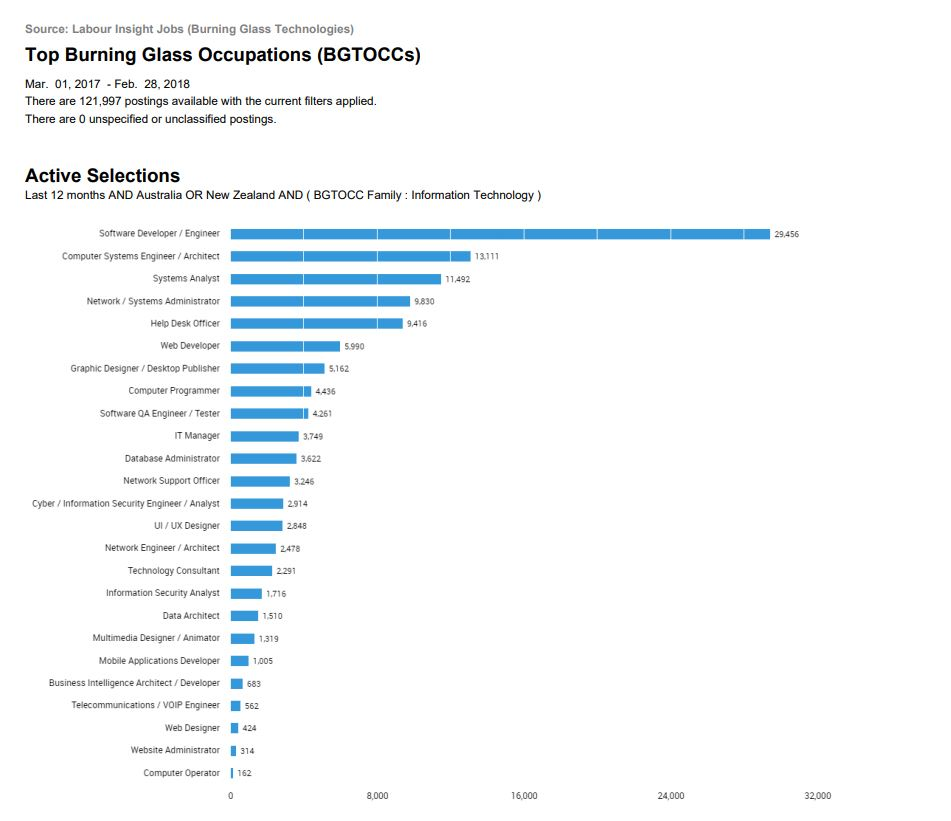

Industry Data
The team were requested to review the Burning Glass Industry Data and provide an opinion on the impact this data may or may not have had on their ideal job choice
Individual OpinionBurning Glass Industry Data
Each team member has chosen an Ideal Job as part of their Assignment 1. The Assignment 2 requirements are to analyse each job per team member and measure it against skills and demand ranking as reflected in Burning Glass Industry Data 2018. This data has then been used to respond to the below questions.
For more detailed information on the Ideal Job Analysis, click on the below button.
Ideal Job Analysis
What are the job titles for your group's ideal jobs?
How do each of these rank in terms of demand from
employers?
| Group Member | Job Titles | Employer Job Title Demand | Ranking |
|---|---|---|---|
| Christopher S | Software Developer | Software Developer / Engineer | 1 |
| Liljana | Biomedical Software Engineer | Software Developer / Engineer | 1 |
| Gerard | Software Developer - Medical Computing | Software Developer / Engineer | 1 |
| Nicole | Financial Crime Intelligence Analyst | Cyber / Information Security Engineer / Analyst | 13 |
| Matthew | Cyber Security Analyst | Cyber / Information Security Engineer / Analyst OR Information Security Analyst | 13 or 17 |
Reference: Burning Glass Industry data - Top Occupations Year March 2018.pdf

How do the IT-specific skills in your required skill set rank in terms of demand from employers?
| IT Skills | Employer Demand Ranking |
|---|---|
| SQL | 1 |
| Windows | 4 |
| C# | 12 |
| Linux | 13 |
| Software Engineering | 15 |
| .NET Programming | 16 |
| Git | 21 |
| Python | 22 |
| Network Engineering | 30 |
| Software Development | 41 |
| Firewalls | 48 |
| C++ | 49 |
| Information Security | 65 |
| Process testing | 75 |
| Software Optimisation | 101 |
| Software Architecture | 127 |
| Visual Studio | 130 |
| Network Security | 138 |
| Tableau | 171 |
Reference: Burning Glass Industry data - Top IT Skills March 2018.pdf

How do the generic skills in your required skill set rank in terms of demand from employers?
| Generic Skills | Employer Demand Ranking |
|---|---|
| Communication Skills | 1 |
| Problem Solving | 2 |
| Writing | 4 |
| Team Work / Collaboration | 5 |
| Troubleshooting | 6 |
| Leadership | 11 |
| Mentoring | 13 |
| Quality Assurance and Control | 14 |
| Meeting Deadlines | 16 |
| Analytical Skills | 17 |
| Team Building | 18 |
| Management | 19 |
| Articulate | 23 |
| Strategic Planning | 38 |
| Creative Problem Solving | 39 |
| Critical Thinking | 40 |
| Self Motivation | 43 |
Reference: Burning Glass Industry data - Top Generic Skills March 2018.pdf

What are the three highest ranked IT-specific skills which are not in your required skill set?
| Rank | IT Specific Skill |
|---|---|
| 2 | JavaScript |
| 3 | JAVA |
| 5 | Project Management |
What are the three highest ranked generic skills which are not in your required skill set?
| Rank | Generic Skill |
|---|---|
| 3 | Organisational Skills |
| 7 | Planning |
| 8 | Detail-Oriented |
Having looked at the Burning Glass data, has your opinion of your ideal job changed? Why or why not?
Christopher's Opinion
The role I selected was largely based of the industry it’s within. I would still be happy to pursue this role if I had the required the skills, but as there is such a high demand for these skills, I imagine that there would be a high level of competition. The other reason I chose this as an example of my ideal job, is that there are many developers creating products as a one-person company. This is an attractive prospect for me as it would mean that I could bypass the competitive aspects of securing a role and focus on creating my own products. The challenge here is that the products would need to be innovative, bringing something different to a well-established market. I would also need to fulfill the other requirements such as maintaining an online shopfront, marketing, and ongoing support for users. Conversely, the benefit of working for a larger company would see me focused more on creating and maintaining software.
Nicole's Opinion
The most in demand Job title according to the Burning Glass Industry Data
2018
is a Software Developer/Engineer.
Looking at the options chosen by our group of five, three have selected this type of role.
The remaining two have chosen security or intelligence which is ranked as 13/17.
The big question is, do we go for a career that has many opportunities and also many applicants? Or do we
focus on a specific area that may have limited job opportunities but may also mean less applicants
because they are more specialised.
To first look at the education side of things and the direction to take, it would make a lot of sense to
focus on a degree that covers off a general variety of IT skills to give us a strong foundation – eg: Degree
in Information Technology.
From there, we can drill further down into specific areas of interest.
It would be much easier to focus on an area of interest that an individual is attracted to as opposed to
an area of demand. Not all roles are suited to all people.
Each member of our group has a unique idea of what interests them and what they feel would suit them. In
our group’s situation, the majority have chosen roles that also happen to be the highest ranking as in
demand jobs.
Although the other 2 roles may not be as in demand, they are still highly important roles due to the
nature of security and privacy protection.
Liljana's Opinion
As previously outlined, my specific ideal job being in the field of software engineering and being of high demand, this can mean that there are more opportunities in this field but also more applicants to compete with.
This may be true, but if your job is done well and you have the knowledge, you can be the top applicant, so, if you are doing what you love and enjoy what you do,it will show in your work.
So therefore, my opinion of my ideal job being, a Biomedical Software Engineer would not change, as I would still try to accomplish my dreams of helping people live their lives to the fullest with medical software engineering technology. pg 1, Tuesday, 16 April 2019,Life of a Biomedical Engineer,17/04/21
Matthew's Opinion
Considering the Burning Glass Data was collected between March 2017 and March 2018, it does not surprise me that a Cyber Security Analyst rank so lowly.
Since the data collection, there has been massive growth within the field of Cyber Security with job vacancies tipped to rise. As reported by ABC News, (Looking for work in 2021? Well you might want to take a close look at these industries) 2021 there will be about 7,000 more cyber security workings needed across all industries Australia wide by 2024. And as of January 2021
the cyber security workforce has grown by 4,000 workers each year.
I chose my ideal job as a Cyber Security Analyst as like many, I am looking for a change in career and I am currently taking steps to pursue that goal. And as previously stated, the IT industry but particularly the security field will require more workers to fill vacancies.
Based off this information I will still be pursuing a career as a Cyber Security Analyst.
Gerard's Opinion
I’m studying because I have been considering a career switch for a long time and have been presented with an opportunity to do this, partly because of an apparent lack of demand for my current profession in Australia. Ideally, I would like to make use of the skills that I have picked up on job roles I’ve had in the past and the studies that I have already completed as well as what I’m currently learning. There were two main considerations for me when deciding what to study: what I would find engaging and what I felt there weren’t enough people already doing. I’ve been involved in a few projects where I wished that I could have rolled my sleeves up and got stuck into the technical side of things, especially as I could often see that this is where the projects needed more work from developers. The Burning Glass data reflects this somewhat which is no surprise: if we couldn’t find enough hours from skilled people to complete jobs it makes sense that these are the jobs hard to fill for employers too. That the data indicates that there are many jobs in my chosen area is encouraging for the three of us in the team that have chosen similar roles but the other two roles selected seem to be in relatively high demand too. I’m in no doubt having worked with this group that if they are determined to work in a specific area they’ll be successful in doing that.
- Return to top